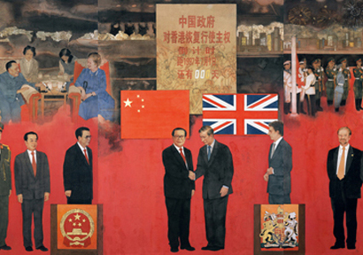

香港回归

1982年9月，英国首相玛格丽特·撒切尔夫人访华，邓小平因香港前途问题与其进行谈判。邓小平提出，关于收回香港主权问题，可以用“一个国家，两种制度（一国两制）”的方案解决。他强调：“关于主权问题，中国在这个问题上没有回转余地。”“应该明确规定：中国将于1997年收回香港。”双方最后达成共识，通过外交途径商谈解决香港问题。于1984年签署协议。
香港回到祖国的怀抱，洗刷了民族百年耻辱，完成了实现祖国完全统一的重要一步。香港回归祖国是彪炳中华民族史册的千秋功业。香港的顺利回归不仅是给西方大国以有力的回击，而且香港回归的成功实践也为世界许多国家和地区解决类似问题提供了实例，对世界政治发展具有重大意义。